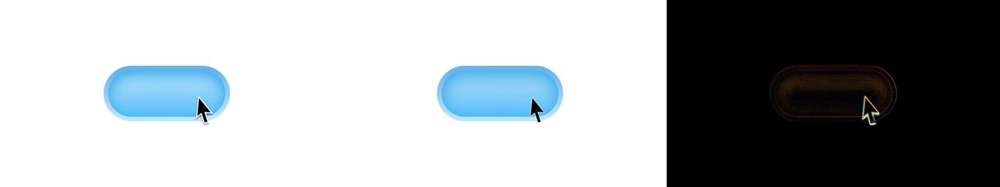

frame-33: source 1.1000s → render 1.1000s
Global MAE 0.331 · SSIM 0.99493 · changed pixels 0.80%
Foreground MAE 19.384 · foreground coverage 1.66%
Metrics cover selected sampled frames and mapped graphic excerpts only. They do not certify whole-video identity, audio, editable layers, or perceptual perfection. Foreground uses the union of both images differing from a reported border-median background; inspect that mask assumption for complex scenes. SSIM is luma, valid uniform 11×11 windows (population variance). Infinite PSNR is represented by null plus psnr_infinite=true. Difference previews amplify absolute channel differences ×4.
Full JSON report · Per-frame CSV
{
"frames_sampled": 24,
"sample_fps": 1,
"all_reference_frames_requested": false,
"global": {
"pixels_compared": 49766400,
"mae": 1.9758492878729423,
"rmse": 15.21074763492451,
"psnr_db": 24.487792390416733,
"psnr_infinite": false,
"changed_pixel_percent": 4.00342600630144,
"mean_ssim_luma": 0.9757160419998838
},
"foreground_union": {
"pixels_compared": 15364734,
"mae": 6.295746154798384,
"rmse": 27.370451611807518,
"psnr_db": 19.38516434231962,
"psnr_infinite": false,
"changed_pixel_percent": 12.929699921912087,
"mean_ssim_luma": 0.9364611890901854
},
"sampled_frames_pixel_identical": false
}Global MAE 0.331 · SSIM 0.99493 · changed pixels 0.80%
Foreground MAE 19.384 · foreground coverage 1.66%
Global MAE 0.546 · SSIM 0.99106 · changed pixels 0.70%
Foreground MAE 3.307 · foreground coverage 16.20%
Global MAE 0.423 · SSIM 0.99522 · changed pixels 1.59%
Foreground MAE 3.983 · foreground coverage 10.43%

Global MAE 0.394 · SSIM 0.99233 · changed pixels 1.36%
Foreground MAE 7.871 · foreground coverage 4.93%
Global MAE 0.386 · SSIM 0.99261 · changed pixels 1.29%
Foreground MAE 8.188 · foreground coverage 4.64%
Global MAE 1.868 · SSIM 0.97863 · changed pixels 1.93%
Foreground MAE 27.1 · foreground coverage 6.82%
Global MAE 3.512 · SSIM 0.96472 · changed pixels 2.69%
Foreground MAE 46.837 · foreground coverage 7.45%
Global MAE 0.973 · SSIM 0.99014 · changed pixels 1.33%
Foreground MAE 19.156 · foreground coverage 5.00%
Global MAE 0.307 · SSIM 0.99711 · changed pixels 0.59%
Foreground MAE 15.128 · foreground coverage 2.00%
Global MAE 2.865 · SSIM 0.96490 · changed pixels 13.03%
Foreground MAE 8.427 · foreground coverage 33.81%
Global MAE 3.969 · SSIM 0.94091 · changed pixels 10.46%
Foreground MAE 4.297 · foreground coverage 88.88%
Global MAE 2.497 · SSIM 0.97855 · changed pixels 4.10%
Foreground MAE 7.91 · foreground coverage 31.15%
Global MAE 1.865 · SSIM 0.98349 · changed pixels 5.77%
Foreground MAE 8.697 · foreground coverage 20.30%
Global MAE 1.057 · SSIM 0.99181 · changed pixels 1.49%
Foreground MAE 2.052 · foreground coverage 49.27%
Global MAE 4.126 · SSIM 0.95994 · changed pixels 6.45%
Foreground MAE 7.191 · foreground coverage 56.89%
Global MAE 3.760 · SSIM 0.95108 · changed pixels 11.22%
Foreground MAE 3.76 · foreground coverage 100.00%
Global MAE 2.940 · SSIM 0.95348 · changed pixels 8.29%
Foreground MAE 7.104 · foreground coverage 40.74%
Global MAE 5.294 · SSIM 0.93841 · changed pixels 7.64%
Foreground MAE 6.695 · foreground coverage 76.53%
Global MAE 4.495 · SSIM 0.94225 · changed pixels 6.75%
Foreground MAE 5.228 · foreground coverage 85.49%
Global MAE 2.531 · SSIM 0.97287 · changed pixels 4.42%
Foreground MAE 2.789 · foreground coverage 90.29%
Global MAE 0.382 · SSIM 0.99517 · changed pixels 0.21%
Foreground MAE 72.29 · foreground coverage 0.52%
Global MAE 0.266 · SSIM 0.99649 · changed pixels 0.72%
Foreground MAE 10.48 · foreground coverage 2.43%
Global MAE 1.041 · SSIM 0.97997 · changed pixels 1.43%
Foreground MAE 38.398 · foreground coverage 2.68%
Global MAE 1.592 · SSIM 0.97110 · changed pixels 1.83%
Foreground MAE 55.344 · foreground coverage 2.86%